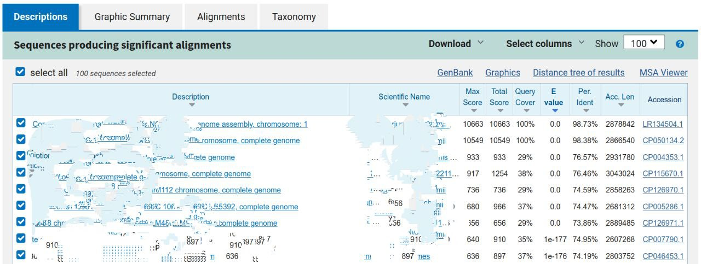
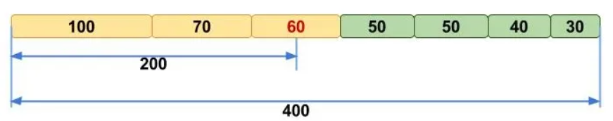

Assembly and Co-assembly of Metagenomic Raw Reads
![]()
Learning Objectives
In the following exercises, you will learn how to perform metagenomic assembly and co-assembly, and explore the output. We will visualize assembly graphs with Bandage, examine assembly statistics with assembly_stats, and align contigs against the BLAST database.
Metagenomic assembly can take hours or even days to complete on real samples, often requiring days of CPU time and hundreds of gigabytes of memory. In this practical, we will work with small toy datasets to demonstrate the assembly process.
Once you have quality-filtered your sequencing reads, you may want to perform de novo assembly in addition to, or as an alternative to, read-based analyses. The first step is to assemble your sequences into contigs. There are many tools available for this purpose, such as metaSPAdes, IDBA-UD, metaMDBG, and MEGAHIT.
We generally use metaSPAdes, as it typically yields the best contig size statistics (i.e., more contiguous assembly) and has been shown to capture high degrees of community diversity (Vollmers, et al. PLOS One 2017). However, you should consider the pros and cons of different assemblers based on your specific needs. Key factors include not only assembly accuracy but also computational overhead, which varies significantly between tools.
For example, metaSPAdes requires substantial memory, especially for very diverse samples with large amounts of sequence data (e.g., soil samples). In such cases, more memory-efficient alternatives like MEGAHIT may be preferable.
In the following practicals, we will demonstrate the use of metaSPAdes on a small short-read sample, Flye on a long-read sample, and MEGAHIT for co-assembly.
Before we start…
First, let’s navigate to the root working directory where we will run all analyses:
cd /home/training/Assembly/The raw reads for assembly generation can be found in the data_dir/short_reads, data_dir/long_reads and data_dir/co_assembly_short_reads folders.
Short-read assemblies: metaSPAdes
For short reads, we will use SPAdes - St. Petersburg genome Assembler, a suite of assembly tools designed for different types of sequencing data. For metagenomic data, we will use the metagenomic-specific mode of SPAdes called metaSPAdes.
metaSPAdes offers many options to fit different requirements, which depend primarily on the properties of data you want to assemble and desired result. Keep in mind that options differ between tools (e.g., spades.py vs metaspades.py).
To explore available options of metaSPAdes, type:
metaspades.py -hWhat metaSPAdes command should be used for the case described below?
You need to assemble paired-end reads from the short_reads folder and save the output to a folder named assembly_spades. Limit resource usage to 5 GB of memory and 4 threads. By default, metaSPAdes performs an error correction on the input reads before assembling. Since provided reads have already been polished, you can run the assembler without the error correction step.
Review the help output from metaspades.py -h and select the appropriate options to build your first assembly command.
Click to see solution
The correct metaSPAdes parameters are:
-1 short_reads/input_1.fastq: path to forward reads-2 short_reads/input_2.fastq: path to reverse reads-o assembly_spades: output folder name-t 4: use 4 threads-m 5: limit memory usage to 5 Gb--only-assembler: skips the error correction step
Please do not execute the assembly command on your machine. Execution time would overall cover half of the session (metaSPAdes alone would take ~15 minutes). Moreover, the VMs have limited resources that barely meet metaSPAdes’ requirements, and running multiple assemblies simultaneously could overload the system.
All output files (including intermediate ones) can be found in the assembly_spades folder.
contigs.fasta and scaffolds.fasta are typically used for downstream analyses (e.g., binning and MAG generation). We will focus on contigs.fasta for this session, which is the same file you will use in the upcoming practicals.
Without going all the way to MAG generation, you can sometimes identify strong taxonomic signals at the assembly stage using a quick blastn alignment.
Open blast website and choose Nucleotide BLAST (blastn). Take the first 100 lines of the sequence by copying the output of the command below:
head -n 101 assembly_spades/contigs.fastaLeave all other options as default on the search page and run BLAST search. The resulting output will have the following format (but will look a bit better than this): 
Based on the top BLAST hits, what species does this contig appear to originate from?
This read dataset was sequenced from a human oral sample. Is this organism commonly found in the human oral microbiome?
As mentioned in the theory session, you will need different statistics to evaluate the quality of your assembly.
assembly_stats is a tool that produces two simple tables in JSON format with various measures, including N10 to N50, GC content, longest contig length, and more. The first section of the JSON output corresponds to scaffolds, while the second corresponds to contigs.
N50 is a metric used to describe the quality of assembled genomes that are fragmented in contigs of different length. It represents the sequence length of the shortest contig at 50% of the total assembly length (when contigs are sorted from longest to shortest).
A (hopefully) clarifying picture to understand N50, where N50==60: 
Essentially, a higher N50 value indicates a better assembly, as it means that longer contigs cover half of the final assembly, making it less fragmented. However, keep in mind that using N50 to compare the quality of two metagenomes only makes sense if the metagenomes are similar.
Note that other metrics follow the same principle: for example, N90 represents the shortest contig length needed to cover 90% of the metagenome.
You can run assembly_stats with the following command:
assembly_stats assembly_spades/scaffolds.fastaYou will see a summary output with statistics for your assembly. In lines with the format N50 = YYY, n = Z, the value n represents the number of sequences needed to cover 50% of the total assembly length. A “gap” is any consecutive run of Ns (undetermined nucleotide bases) of any length. N_count is the total number of Ns across the entire assembly.
What are the lengths of the longest and shortest contigs?
What is the N50 of the assembly? Considering that the input consisted of ~150 bp paired-end reads, what do these statistics tell you about the quality of the assembly?
Another useful tool for assessing metagenomic assemblies is QUAST, which provides deeper insights into assembly statistics — such as indel frequency and misassembly rate — in just a short amount of time.
Long-read assemblies: Flye
For long reads, we will use Flye, an assembler designed for single-molecule sequencing reads such as those produced by PacBio and Oxford Nanopore Technologies (ONT). Like SPAdes, Flye performs both reads error correction and assembly. It compensates for the high base-calling error rate in long reads by comparing multiple reads that cover the same genomic region.
You can view all Flye parameters using the help command:
flye -hWhat Flye command should be used for the case described below?
You need to assemble ONT reads from the long_reads folder using 4 threads and save the output to a folder named assembly_flye_meta. The provided ONT reads are raw and require error correction. Also, keep in mind that by default, Flye performs an isolate assembly, but in this case, we want to perform a metagenomic assembly.
Click to see solution
The correct Flye parameters are:
--nano-raw long_reads/ONT_input.fastq: assemble input reads with error correction. Depending on data quality, other presets can be used. For example, if reads have been pre-polished and adapters removed, use--nano-corr. The--nano-hqoption should be reserved for high-quality data. The same logic applies to thepacbiooptions.--threads 4: number of threads--out-dir assembly_flye_meta: output folder--meta: enable metagenome mode
As before, we recommend to NOT launch this command during this session. Each run takes around 5 minutes and would fully occupy all available CPU cores.
The output files generated by Flye can be found in the assembly_flye_meta folder.
To further investigate the effect of the --meta flag, we also generated another assembly without it. The output of that run can be found in the assembly_flye folder.
Diving Into Assembly Graphs
Let’s take a first look at what assembly graphs actually look like. Bandage (short for Bioinformatics Application for Navigating De novo Assembly Graphs Easily) is a program that creates interactive visualisations of assembly graphs. It can be used to explore different parts of the graph — for example, rRNA genes, SNPs, or inspect specific genomic regions. With it, you can zoom and pan around the graph, search for sequences, and perform many other operations.
In this exercise, we will use Bandage to compare the assembly graphs we generated with Flye and metaSPAdes. We will start with metaSPAdes.
When working with metaSPAdes output, it is usually recommended to open the file assembly_graph.fastg in Bandage. However, our assembly is quite fragmented, so in this case we will load assembly_graph_after_simplification.gfa instead.
Execute the following command to lauch the Bandage application:
Bandage &In the Bandage graphical interface, perform the following steps:
- Go to File → Load graph
- Navigate to
/home/training/Assembly/assembly_spades - Select and open the file
assembly_graph_after_simplification.gfa
Once the file is loaded, you need to draw the graph. To do so, in the Graph drawing panel on the left side perform the following:
- Set Scope to
Entire graph - Click on
Draw graph
Can you identify any large or complex regions within the metaSPAdes graph? If so, what do they look like?
Now, open another instance of Bandage as you did before, and load assembly_flye/assembly_graph.gfa.
How does the Flye assembly differ from the one generated with metaSPAdes?
As mentioned earlier, we ran Flye both with and without the --meta flag on long_reads/ONT_input.fastq. You can now repeat the same visualization procedure for the other Flye graph and compare the results.
Notice how the metagenomic assembly mode affects the graph structure compared to the default isolate assembly mode.
This ONT dataset originates from run ERR3775163, which can be explored on the NCBI browser. Take a look at its metadata.
Can you figure out why the assembly graph from the run without --meta looks better than the one with --meta?
Try running a BLAST search for the first 100 lines of the first contig of the long-read assembly. (You won’t be able to BLAST the entire contigs as they are too long.) Do the results match the metadata you found on ENA?
Co-assemblies: MEGAHIT
In the next part of this exercise, we will explore co-assembly of multiple datasets. Remember that co-assembly produces meaningful results only when applied to similar samples. This is true for the raw reads we co-assembled here — they all originate from a single sample that was split for this exercise.
Explore MEGAHIT parameters using the help command:
megahit -hAs before, we recommend not to launch MEGAHIT command this time.
You will find MEGAHIT output files in the co_assembly_short_reads folder.
The following parameters were used to generate the co-assemblies:
-1 [forward files comma-separated]-2 [reverse files comma-separated]-o co_assembly_megahitoutput folder-t 4number of threads--k-list 23,51,77list of k-mer lengths
Compare the co-assembly contigs file with the single-assembly one using the assembly_stats tool.
How does this assembly differ from the one generated earlier with metaSPAdes? Which one do you think is better, and why?
You might notice that MEGAHIT does not generate assembly graphs by default. To create one, run the following command:
megahit_toolkit contig2fastg 77 co_assembly_megahit/final.contigs.fa > co_assembly_megahit/final.contigs.fastgExplore the graph in Bandage.
The datasets used for the metaSPAdes assembly and the MEGAHIT co-assembly originate from the same source. Do you observe any relevant differences between the two assembly graphs?
The End
Fantastic work — you’ve reached the end of the practical! 🎉
You’ve explored different assemblers, compared their outputs, and learned how to visualise and interpret assembly graphs — great progress toward mastering metagenomics.
Take a moment to reflect on what you’ve learned today.
If anything remains unclear, don’t hesitate to ask questions — there are no silly questions!
If you still have some spare time, take a look at the sections labelled “Extra.” They contain optional exercises for curious students who want to explore further.